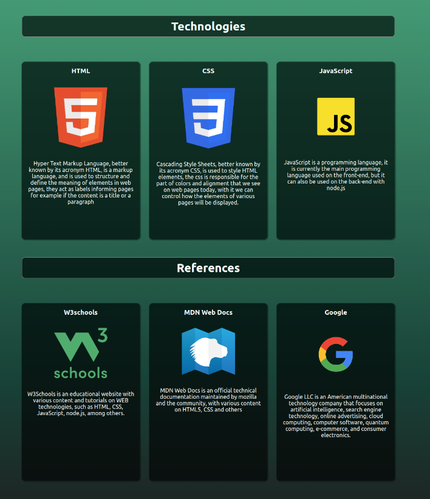
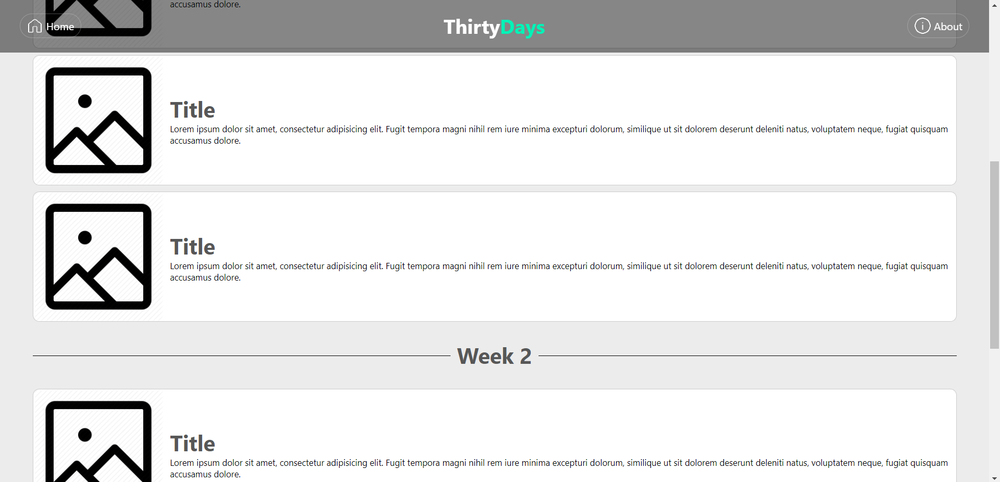

Page contents
Introduction
After creating the nav we develop the main content and subsections
The main content of the home page is a large image with text, called a hero, this is usually done by applying the image directly to the CSS using a function called url
Hero
After importing the image, some adjustments were made using the css backgroud-position properties that define the initial position of the image a backgroud-size to specify its size and how it will adjust and a specific default height was also defined so that it occupies a larger size part of the screen
below is an image of the first model developed

The text was centered using flexbox, note that the navigation bar in this template was still static and not moving with the content
In the template below, hero and nav are already very similar to the current site
Content subsections
After hero came the content subsections where some more information about the project appears, such as the technologies tab that informs the languages used in the project and the documentation tab that shows the references used during our studies
Their alignment was done using flexbox, and they have a hover effect when the mouse is placed over the card it elevates and gains a highlight over the others.
below is an image of the first model developed
slightly more current version, some adjustments were made later
WEEK subsections
The Week subsection was made following the same logic, only changing the style of the cards, on the week page they were aligned in columns using flexbox
below is an image of the first model developed
Actual model